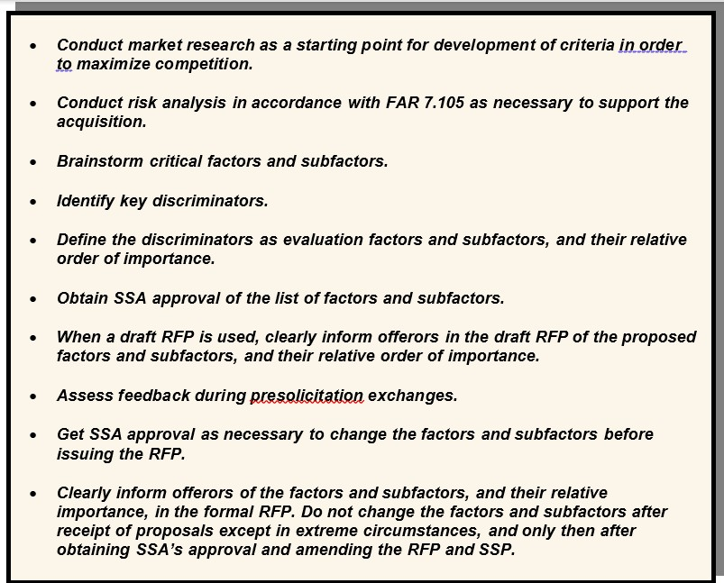

CHAPTER 2 PRESOLICITATION ACTIVITIES
2.1 Conduct Acquisition Planning
Acquisition Planning. Acquisition planning should start when an agency identifies a need for supplies, construction and/or services. When practical, utilize an integrated product team (IPT) approach to develop the acquisition plan and/or strategy as required. This early teaming effort may reduce false starts and resulting delays that frequently accompany the preparation of a complex procurement. (Reference DoD Source Selection Procedures 2.1.1)
Best Practice: Some of the decisions/determinations made during the planning phase are key and will impact the entire acquisition from source selection through contract administration. Including key stakeholders, such as contract administrators, small business professionals (SBPs), Contracting Officer’s Representatives (CORs), Quality Assurance (QA) and Property Administrator, will help to ensure consideration of issues that may impact the requirements, performance, and acquisition strategy as a whole.
Risk Assessment. Risk analysis is a critical component of acquisition planning, and the market research results should be a primary consideration as part of this analysis. Early identification, formation, and direct involvement of the acquisition team (and key stakeholders) will help to ensure a comprehensive understanding of the requirements and any marketplace influences on risk and risk mitigation. (Reference DoD Source Selection Procedures 2.1.1.2)
Peer Reviews. See AFARS 5101.170 for Preaward peer reviews. Planning and including realistic time allowances for all requisite reviews when establishing milestone schedules, is essential to the success of your acquisition.
Market Research. Market research is a shared responsibility and continuous process conducted by the PM, requiring activity, PCO, SBP, and other acquisition team members which directly influences how the acquisition strategy and source selection process is shaped. (Reference DoD Source Selection Procedures 2.1.2 and AFARS 5110.002)
Some techniques you may use in conducting market research include:
Use general sources of information available from the marketplace, other DoD/ government agencies, and the internet.
Contact knowledgeable individuals, such as SBPs, regarding market capabilities and business practices.
Review the results of recent market research for same or similar requirements.
Query government and/or commercial databases (e.g., Dynamic Small Business Search https://dsbs.sba.gov/search/dsp_dsbs.cfm, System for Award Management (SAM.Gov); https://sam.gov/content/home.)
Conduct industry engagement/industry days in coordination with supporting Small Business Office.
Prepare a draft Request for Proposal (RFP) and ensure review by a SBP prior to issuing. (DoD Source Selection Procedures 2.1.2.3)
2.2 Develop a Source Selection Plan
Selection of Evaluation Factors. Selecting the correct evaluation factors is the most important decision in the evaluation process. Structure the evaluation factors and their relative importance to clearly reflect the needs of your acquisition, with consideration given to the inclusion and evaluation of intellectual property/data rights and what is necessary and prudent be included in the acquisition.
Mandatory Evaluation Considerations. For source selections, you must evaluate cost/price (unless the exception at FAR 15.304(c)(1)(ii)(A) applies) and the acceptability/quality of the proposed product or service through one or more non-cost evaluation factors (e.g., past performance, technical excellence, management capability, and key personnel qualifications).
As stated at FAR 15.304(c)(1)(ii)(A)), the PCO may exclude cost/price as an evaluation factor for a Multiple Award IDIQ effort issued for the same or similar services if the Government intends to make award to all "qualifying offerors" and Cost/Price will be considered as one of the factors for all tasks/delivery orders.
Additionally, you must evaluate past performance on all negotiated competitive acquisitions expected to exceed the thresholds identified in FAR 15.304 and DFARS 215.304, unless the PCO documents why it would not be appropriate. There may be other required evaluation factors, such as small business participation, based upon regulatory and/or statutory requirements. (See FAR 1 5.304 and its supplements)
From this vantage point, the acquisition team must apply prudent business judgment to add other evaluation factors, subfactors, and elements that are important to selecting the most advantageous proposal(s). The number of factors and subfactors should be kept to the absolute minimum required to effectively assess the proposal(s). The use of more factors than needed to conduct the evaluation can complicate and extend the process, while providing no additional value and thereby diluting meaningful discriminators. Limiting factors also serves to reduce the evaluation oversight span-of-control responsibilities of the SSEB leadership, SSA/SSAC, PCO, and legal counsel, thereby permitting more focused oversight on the remaining (and most important) factors/subfactors and reducing the likelihood of evaluation errors.
Common evaluation factors are cost/price, technical, past performance, and small business participation.
NOTE: Ensure small business participation remains an independent factor, not subordinate and a subfactor to any other evaluation factor. Additionally, if appropriate for the requirement, you may have other evaluation factors and/or may use one or more levels of subfactors. The standard Army naming convention for the various levels is: Evaluation Factor, Subfactor, and Element. (See Figure 2-1)

Figure 2-1: Sample Evaluation Factor Structure
Establishing Evaluation Factors and Subfactors. The acquisition team develops the evaluation factors and any appropriate subfactors and elements. The team should select the factors based on user requirements, acquisition objectives, thorough market research and risk analysis. Figure 2-2 illustrates the steps involved in developing the factors and subfactors. The use of elements should only be utilized on rare occasions. (AFARS 5115.304)
Once the RFP is issued, the factors and subfactors give the offerors insight into the significant considerations the government will use in selecting the best value proposal and help them to understand the source selection process. Carefully consider whether minimum “acceptable/unacceptable” entry-gates can be included.
The team must also specify whether technical ratings will be applied at the subfactor level or rolled up to the factor level, with the information contained and clearly stated in the RFP so all stakeholders know how the evaluation of ratings will be applied.
NOTE: The Small Business Subcontracting Plan is not a factor or subfactor to be rated but, as stated at FAR 19.705-4, shall be reviewed for adequacy and determined to be “acceptable or unacceptable based the requirements identified at FAR 19.704. When used properly, this use of entry-gate criteria can streamline the evaluation process significantly.”

Figure 2-2: Steps Involved in Formulating Evaluation Factors and Subfactors
Nongovernment Advisors. Allowance and guidelines for use of contracted advisory services is stated at FAR 37.203, FAR 37.204, and FAR 37.205. If utilized, prior to issuing a solicitation, the head of the agency shall make a written determination based on availability of qualified personnel withing the agency. Nongovernment advisors may assist in and provide input regarding the evaluation, but they shall not determine ratings or rankings of the offeror’s proposals. Recommend clarifying allowances and or access that will be given the advisors (e.g., access to the entire proposal or only access to the part concerning their particular expertise? Can they write strengths and weaknesses or only assist other evaluators in this process? Can they participate in the consensus process without participating in/providing input for the rating assignment?).
Reminder, nongovernment sources can include academia, nonprofit institutions, and industry.
Reminder: When using nongovernment advisors, you must advise potential offerors of the nongovernment advisors’ participation in the source selection and obtain the offerors consent to provide access to its proprietary information to the nongovernment advisor or the company which employs the nongovernment advisor. Figure 2-3 identifies suggested RFP language relative to the use of commercial firms to support the source selection process. (Reference DoD Source Selection Procedures 2.2.8)

Figure 2-3: Suggested RFP Language for the use of Nongovernment Advisors
Source Selection for Services. The source selection process for services, including development of the SSP, is often very complex. Organizations must ensure that the SST is comprised of qualified personnel with specific knowledge of the types of services to be acquired.
The use of Sample Tasks is an effective tool in the evaluation of services. Sample Tasks can provide insight as to the offeror’s level of understanding of the work to be performed, as well as how the technical approach relates to the cost/price proposed for that Sample Task. (See Appendix H for an example of a Sample Task.)
To the maximum extent practicable, sample tasks should set forth requirements that are contemplated for award, establishing the expectation that offerors will be held accountable for the resources and costs they propose.
The use of generic or hypothetical sample tasks may unintentionally create an environment that misleads offerors to understate resources and costs due to the fact that the sample tasks will not be awarded. Care must be taken to draft the sample tasks as closely as possible to the types and scope of services expected to be acquired from the Performance Work Statement (PWS). If possible, consider the use of a “live” task, which would be awarded at time of contract award.
Evaluation criteria should be limited to essential areas of performance that are measurable during the proposal evaluation process. This will permit a more focused evaluation of the offeror’s proposed solution to the sample task.
If utilizing a sample task, ensure this is accounted for and aligned with Sections L and M (or equivalent sections for procurements not using uniform contract format (UCF)).
2.3 Develop the Request for Proposals
The success of an acquisition is directly linked to the quality of the RFP. A well-written RFP will:
Facilitate fair competition;
Convey a clear understanding of the government’s requirements;
Clearly identify the evaluation and award criteria;
Clearly detail information required by the offerors;
Limit criteria to discriminators that are not overly restrictive, but add value and reduce risk;
Preserve the offeror’s flexibility to propose innovative solutions when appropriate;
Specify areas where the offerors can make technical and cost tradeoffs in their proposals;
Ensure that Sections L and M (or equivalent sections) relate back to each other and the SSP.
Ways to Improve the RFP Process
Ensure Consistency in the RFP and Related Documents. RFP inconsistencies can create ambiguity and result in less advantageous offers, require RFP amendments, cause delays in the acquisition, and result in litigation. Inconsistencies between the descriptions of the government’s requirements, instructions on how to prepare a proposal, and information related to the evaluation factors and subfactors are particularly troublesome and can be a result of various groups of personnel developing different RFP sections without adequate coordination and review. Additionally, when one document is revised, those revisions must also be made to other corresponding documents.
It may be beneficial to develop a matrix that correlates the RFP sections and content to ensure consistency. Figure 2-4 illustrates how key documents and evaluation standards map to one another, showing the recommended sequencing for document preparation. Providing industry with a similar copy of the matrix as a reference tool and part of the solicitation can aid in proposal preparation. You may also consider including a column for offerors to complete in the tracking matrix (as shown in Figure 2-4), denoting where in their proposal the requirement is addressed. This approach promotes understanding of the linkage within the solicitation, explains how all parts of the proposal will be used in the evaluation process, and enables a crosswalk for both the government and offerors to ensure all requirements have been addressed.
| SPECIFICATION AND PWS |
EVALUATION FACTORS, SUBFACTORS EVALUATION AND SUBMISSION INFORMATION |
PROPOSAL REFERENCE | ||
| SPECIFICATION | PWS |
PROPOSAL EVALUATION INFORMATION RFP Section M Factor – Technical Subfactor – Software Modification Approach |
PROPOSAL SUBMISSION INFORMATION RFP Section L |
OFFEROR TO COMPLETE Provide Page and Paragraph Number Where Addressed |
| Software code shall meet the computer software design and coding requirements as defined in International Standards Organization (ISO) 9000-3. |
3.1.1. The contractor shall modify, integrate and test software as specified in the system specification. 3.1.1.3 The contractor shall prepare a software modification plan. |
The offeror’s software modification approach will be evaluated relative to the modified software’s ability to accommodate open architecture, tracking accuracy, and reliability. | The offeror will describe its approach to software modification and explain how the software will accommodate open architecture, conforms to ISO-9000-3, tracks accurately, and maintains reliability. | |
Figure 2-4 Requirements to RFP to Proposal Tracking Matrix
Avoid Requesting Too Much Information from the Offerors. Instructions for preparing and submitting proposals are critical to the acquisition. Always keep in mind:
There must be a direct linkage between solicitation requirements and objectives, each evaluation factor and subfactor, and the proposal preparation instructions.
Request only the essential information needed to evaluate proposals against the evaluation factors and subfactors.
Never ask for information that will not be evaluated. Instructions that require voluminous information can unintentionally limit or reduce competition by causing potential offerors to forego responding to the solicitation in favor of a less costly business opportunity.
Excessively large proposals may increase the time and costs associated with performing the evaluation. Specific guidance such as proposal page limitations or page recommendations and narrative font style and size are encouraged but need to be clearly defined and tailored to the needs of the acquisition.
Focus exclusively on true discriminators (discriminators linked to critical requirements which are based on market research, the assessment of risk, and that enables the evaluation to discern between various values in the offeror’s proposal). Failure to do so dilutes the evaluation and compromises the SSA’s ability to identify the best value proposal.
Use performance-based requirements but remain mindful that design requirements that are too detailed, or overly prescriptive performance work statements, severely limits the offerors’ flexibility to propose their best solutions. Instead, use functional or performance-based requirements to the maximum extent practicable. While it may be more difficult to develop evaluation criteria and conduct the evaluation process using this approach, the benefits warrant and support it. These benefits can include increased competition, access to the best commercial technology, better technical solutions, and fewer situations for protests.
Drafting Instructions to Offerors (Section L or Equivalent)
Provide specific guidance to offerors regarding the structure of their proposals. The proposal should be divided into distinct volumes or files. These volumes/files should correlate to each of the evaluation teams (e.g., technical, cost/price, past performance, etc.) or factors. How each volume/file is to be structured should be stated. These practices will facilitate distributing and aligning the proposal material to the various teams or specific factors, making it easier for evaluators to locate specific information in the proposals.
NOTE: Clearly advise offerors to keep technical and pricing information separate and not inter-mixed between proposal volumes.
Past Performance Information . Tailor the proposal submission requirements to reflect the complexity of the procurement and the relative importance assigned to past performance. Request only the information necessary for the evaluation. Consider the following when developing proposal submission requirements:
Contract references. Request offerors to submit a list of government and non-government contract references to include joint venture participation. References are to include contract number, contract type and dollar value, place of performance, date of award, whether performance is on-going or complete, extent of subcontracting, and the names, phone numbers, and e-mail addresses of at least two points of contacts for each contract.
o Require the list to include all relevant on-going contracts, or contracts completed during a specified period. This approach will provide an ‘unfiltered’ view of the offeror’s contract efforts, not just the ‘select’ contract efforts. If you anticipate the number of contracts will be excessive, limit the submission to a specified number of the most recent, relevant contracts. In such cases, require the contracts to have been active for a specified period of time, since newly awarded contracts will probably not provide sufficient information.
o Recommend limiting the specified period to contracts performed within the last three years, or no greater than six years for simple construction, architect-engineering (A-E) contracts, and more complex works. Recency of past performance should be calculated using the RFP release date as a benchmark. A shorter period may be appropriate for acquisitions where there are numerous actions and/or many vendors providing the required items.
o When appropriate and determining recency for certain types of large construction works (e.g., military housing, navigation projects or other large civil works), a greater time period in excess of six years should be considered and used to obtain realistic examples of past performance.
o When offerors are likely to be large, multi-function firms, limit the contract references to those performed by the segment of the firm (e.g., division, group, and unit) that is submitting a proposal.
Past Performance Information of a Prospective Subcontractor. When planning how a subcontractors’ past performance is intended to be evaluated, explain how any related adverse past performance information will be handled. In some acquisitions, an offeror’s prospective subcontractor may be the offeror’s competitor on other acquisitions. In such cases, the prospective subcontractor may be hesitant to have any adverse information related to its past performance released to the offeror. The acquisition should be tailored accordingly and advise offerors in the RFP how the disclosure of such information will be handled.
Questionnaires.Questionnaires or interviews may be utilized to obtain the information from individuals having knowledge about the offeror’s past performance, and details such as contract points of contact (name, email, and phone numbers) shall be included in the information provided back to the government in the proposal.
Consider the following when using questionnaires:
o Keep the questionnaire short. Typically, it should be no longer than 1-2 pages.
o Format the questionnaire to easily facilitate electronic completion (e.g., fill-in blocks, and electronic checkboxes).
o Include a copy of the questionnaire in the RFP.
o Either distribute the questionnaires to the points of contact or have the offerors distribute the questionnaires. Prior to the government sending out the questionnaires, and when practical, contact the respective points of contact and emphasize the importance of the completed questionnaires returned to the government promptly. Having the offerors send out the questionnaires may save time and resources.
Small Business Participation Past Performance. All offerors shall submit information substantiating their past performance and compliance with FAR 52.219-8 Utilization of Small Business Concerns, FAR 52.219-9 Small Business Subcontracting Plan, and DFARS Subpart 215.305 Proposal Evaluation, to maximize opportunities for small business subcontractors. Offerors shall also provide a statement indicating whether any negative information has been reported in the past three years (or other number of years as identified in the solicitation) concerning their past compliance with FAR 52.219-8 or FAR 52.219-9. If any such negative information is reported, the offeror may submit explanations or comments responding to such negative information. Offerors with no prior contracts containing FAR 52.219-8 and/or 52.219-9 shall certify stating as such. For other than small business, include SF 294 and SF 295 (or Individual Subcontracting and Summary Subcontracting Reports in eSRS) information for Government contracts with these reporting requirements for the last X (fill in number, same as period stated elsewhere for past performance) number of years.
Relevant Past Performance. Include in the RFP a definition of what constitutes relevant past performance. Factors that may be used to define relevancy include similarity, size, complexity, dollar value, contract type, and degree of subcontracting/teaming. As appropriate, require the offeror provide a description of how the contract references are relevant to the immediate acquisition. In some cases, previous contracts as a whole may be relevant to the immediate acquisition, while only portions of other contracts may be relevant.
Small Business Participation . The Army methodology for evaluating small business participation in unrestricted source selections is to establish a separate factor (versus a subfactor under technical) with an assigned relative order of importance for small business participation as it relates to the other source selection evaluation factors as stated at FAR 15.304(c)(3)(ii) and (c)(4).
When evaluating small business participation, solicitations must be structured to give offers submitted by small business concerns the highest rating for this evaluation factor in accordance with FAR 15.305(a)(5). In addition, small businesses are not required to submit any information (see C.F.R.125.3(g)(3)) in connection with the small business participation evaluation factor or required to submit a proposed Small Business Participation Commitment Document.
Proposal Submission Instructions. The submission instructions should be written clearly enough to indicate that:
o Other than small business contractors may achieve the small business participation goals through subcontracting to small businesses.
o Small business contractors may achieve small business participation goals through their own performance/participation as a prime and also through a joint venture, teaming arrangement, and/or subcontracting to other small businesses.
Small Business Participation Commitment Document (SBPCD). The SBPCD format is designed to streamline and bring uniformity to responses and evaluations for small business participation when required under FAR 15.304. The format provides clarity that is distinctly different from the Small Business Subcontracting Plan required for other than small businesses. (See FAR 52.219-9)
A sample SBPCD format is located at Appendix F and can be provided in the instructions to offerors or as an attachment to the RFP. NOTE: The SBPCD is to be rated acceptable/unacceptable. (Ref DoD Source Selection Procedures 2.3.2.8 and 3.1.4.1.2. Table 6).
Subcontracting Plan. Separate from the SBPCD, other than small business offerors must also submit a small business subcontracting plan meeting the requirements of FAR 52.219-9 and DFARS 252.219-7003 (or DFARS 252.219-7004 if the offeror has a comprehensive subcontracting plan).
o Other than small businesses must submit acceptable subcontracting plans to be eligible for award. Subcontracting plans shall reflect, and be consistent with, the commitments offered in the SBPCD.
o When a specific small business is identified in a proposal, the same small businesses identified and considered in the evaluation shall be listed in the subcontracting plan submitted pursuant to FAR 52.219-9 to facilitate compliance with DFARS 252.219-7003(e).
o The Subcontracting Plan is determined acceptable / unacceptable (See FAR 19.705-4(c)).
Drafting Evaluation Criteria (Section M or Equivalent)
In Section M (or equivalent) of the RFP, clearly state how each factor will be evaluated and the relative importance of evaluation factors.
Past Performance Information . Clearly state how past performance will be evaluated, its relative importance, and how offerors with no relevant past performance will be evaluated. Consider the following when drafting this section:
Use Past Performance to streamline the source selection process. Instead of evaluating management as a separate evaluation factor, consider assessing management effectiveness in meeting Technical and Schedule requirements as part of the past performance evaluation. Using past performance in this way may, under appropriate circumstances, eliminate the need for the offeror to submit management and quality plans.
Past Performance Considerations. At a minimum, consider the offeror’s record of complying with contractual requirements in the areas of schedule, technical quality, and cost control (for cost reimbursement contracts). You may also consider the offeror’s record of business relations. Tailor the scope of the areas considered to the immediate acquisition.
Small Business Participation . Other than small businesses will be evaluated on their level of proposed small business participation in the performance of a resulting contract relative to the objectives established herein. Offerors shall submit a SBPCD which specifies the offeror’s level and degree of commitment to small business utilization/participation in performance of this requirement. A SBPCD is required from all offerors, including companies with commercial plans and comprehensive subcontracting plans.
Small businesses are not required to submit subcontracting plans but will be required to address the extent of small business performance (participation) in their proposals when required by the solicitation.
The government may evaluate:
The extent to which such firms, as defined in FAR Part 19, are specifically identified in proposals;
The extent of commitment to use such firms (and enforceable commitments will be considered more favorably than non-enforceable ones);
Identification of the complexity and variety of the work small firms are to perform;
The realism of the proposal; and
Past performance of the offerors in complying with requirements of the clauses at FAR 52.219-8, Utilization of Small Business Concerns, and 52.219-9 Small Business Subcontracting Plan.
Small business participation goals/Minimum Quantitative Requirement (MRQ) is based on market research (e.g., inclusive of researching historical data and contacting subject matter experts). Research can entail the type and complexity of work, the availability of small businesses, and their capability and capacity.
If using the percentage of subcontracted dollars for the SBPCD, the dollars should correlate directly to the percentage of subcontracted dollars in the small business subcontracting plan for other than small businesses. NOTE: DoD’s assigned subcontracting goals may be used to establish small business participation minimum goals when market research results confirms that these goals are achievable or when market research is lacking sufficient data to use another source as a baseline.
Small business prime offerors shall be advised that their own participation as a prime can be counted towards the percentages set in this evaluation factor. Small businesses shall not be required to subcontract to other small businesses in order to achieve the small business participation goals, unless small business goals are set as a percentage of planned subcontracting dollars.
Requiring offerors to provide both the percentage and the associated total dollar equivalent of work to be performed by small businesses can assist in providing consistency in the evaluation. Additionally, the information may be helpful to provide transparency for small businesses when previously performed services are currently consolidated and/or bundled into an unrestricted acquisition.
NOTE: Dollars awarded to a firm with multiple SB designations should be counted in each applicable category. For example, a firm that is a WOSB and a SDVOSB would be counted in the SB, WOSB, VOSB, and SDVOSB categories.
The extent of participation of small business prime offerors and small business subcontractors. The Army’s preferred methodology for evaluating small business participation goals in source selections is in terms of the percentage of the VALUE of the total acquisition. However, it is permissible to set goals as a percentage of ‘planned subcontracting’ dollars.
o Total Contract Value/Dollars Example: This scenario provides clear results for the evaluation. Scenario: Small business participation goal is set at 15% of total contract value and dollars equivalent on a procurement valued at $1,000,000:
Other than Small Business Offeror A: 20% (20% of $1,000,000 = $200,000)
Other than Small Business Offeror B: 25% (25% of $1,000,000 = $250,000)
Small Disadvantaged Business (SDB) Offeror C: 15% (SDB self-performs 15% of the $1,000,000 = $150,000)
o Sample language: The extent to which the offeror meets or exceeds the goals: Goals for this procurement are -- Small Business: {a%} of the total contract value; Small Disadvantaged Business (SDB): {b%} of the total contract value; Women-Owned Small Business (WOSB): {c%} of the total contract value; Historically Underutilized Business Zone (HUBZone) Small Business: {d%} of the total contract value; Veteran Owned Small Business (VOSB): {e%} of the total contract value; Service Disabled Veteran Owned Small Business (SDVOSB): {f%} of the total contract value. (NOTE: a participation plan that reflects {c%} of the contract value for WOSB would also count towards the overall Small Business Goal; percentages for SDVOSB also count towards VOSB).
Percentage of participation in terms of subcontracted dollars is the LEAST preferred methodology.
o Percentage of Planned Subcontracting Dollars Example: Since each offeror in the scenario below is allowed to determine how much of the work is planned for subcontracting, including small business and other than small business, using the percentage of planned subcontracting dollars methodology can provide a skewed evaluation of small business participation if not analyzed thoroughly. Percentage of planned subcontracted dollars can reflect a high percentage with low dollars going to small businesses (e.g., Other than Small Business Offeror B below), and vice versa with a lower percentage but higher dollars (e.g., Other than Small Business Offeror A below) going to small business, as shown in the scenario below.
Scenario: Small business participation goal is set at 15% of the planned subcontracted dollars on a procurement valued at $1,000,000:
Other than Small Business Offeror A: 22% (22% of $200,000 planned for total subcontracting = $44,000 small business subcontracted dollars)
Other than Small Business Offeror B: 30% (30% of $10,000 planned for subcontracting = $3,000 small business subcontracted dollars)
SDB Offeror C: 15% (SDB self-performs 15% of the total contract = $150,000)
o Sample language: (Alternate when using planned subcontracted dollars) The extent to which the offeror meets or exceeds the goals: Goals for this procurement are -- Small Business: {a%} of the total subcontracted
dollars; SDB: {b%} of the total subcontracted dollars; WOSB: { c%} of the total subcontracted dollars; HUBZone: {d%} of the total subcontracted dollars; VOSB: {e%} of the total subcontracted dollars; SDVOSB: {f%} of the total subcontracted dollars. (Note: The total must equal 100%).
Establishing Relative Importance. When using the tradeoff process, you must assign relative importance to each evaluation factor and subfactor. Tailor the relative importance to your specific requirements.
Use priority statements to express the relative importance of the evaluation factors and subfactors. Priority statements relate one evaluation factor (or subfactor) to each of the other evaluation factors (or subfactors). Figure 2-5 below contains a sample priority statement. (Reference DoD Source Selection Procedures 2.3.3)
Reminder: Numerical weighting (i.e., assigning points or percentages to the evaluation factors and subfactors), is NOT an authorized method of expressing the relative importance of evaluation factors and subfactors (See AFARS 5115.304(b)(2)(B)).
Figure 2-5: Sample Priority Statement